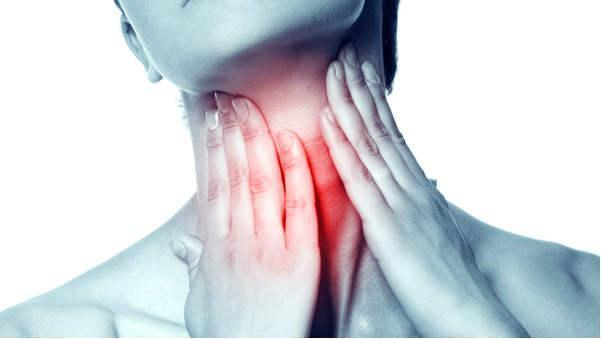
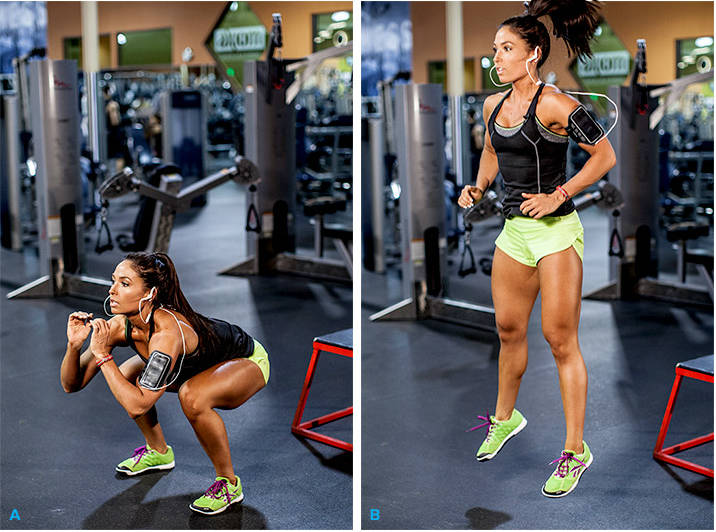

Dhyara
Because You're Worth It!

Simple Methods to treat Back Pain
As we grow older, our body undergoes several changes like we put on weight, our bones become weak, but one of the most annoying problems that come with age is back pain issues...
Tea Remedies for Sore Throat
A sore throat is one of the most annoying situations that we face in our everyday life. It spoils our mood and it simply takes the fun out of everything that we are doing. A sore throat is a condition that arises due to the...Side effects of drinking too much Green Tea
Whenever we hear the term, 'Green Tea', the thing that first comes in our mind is the health benefits that it offers. In fact, many of us has also included this wonderful beverage to our daily life...
When You Drink Water On An Empty Stomach After Waking Up, These 8 Amazing Things Will Happen
Water represents 70% of the composition of our body and is indispensable to keep it healthy...
How To Choose And Maintain Contact Lenses
Choosing and maintaining contact lenses is an important part of using them. You need to follow a few pointers in order to do it well...
Surprising Uses Of Beer In Life
Regret consuming a glass of beer last night? Not anymore! With a plethora of reasons to fascinate you, this popular alcoholic beverage will never be stereotyped as just another drink...
Why Squatting Is Better Than Running
Squatting and Running are common physical activities which keep you live and active, all day round. And as a part of your daily fitness regime, you probably prefer running to squatting...
Amazing Uses of Vodka
There is no denying that vodka is one of the most popular alcoholic beverages across the globe and it is not hard to fathom why. Vodka is actually neutral having no strong smell and you can easily mix it with a bunch of other...